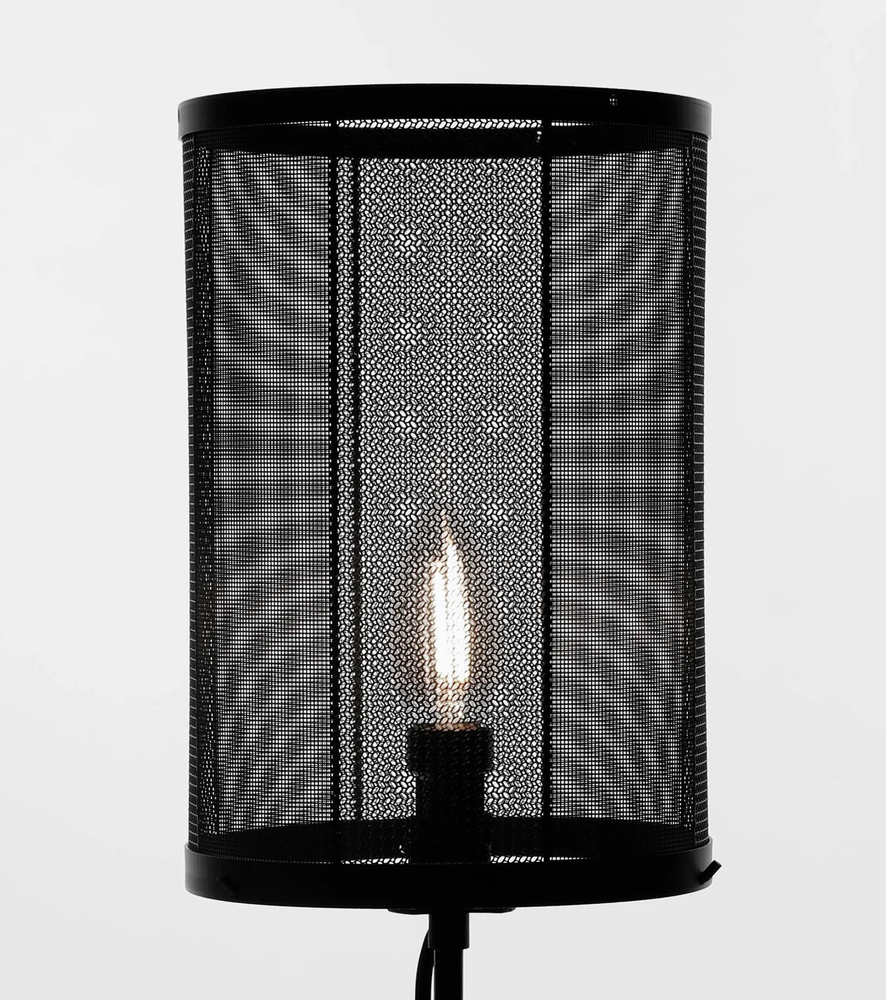

← 작업으로조명 · 2025
조각보 램프 : 갓
낮의 구조가 밤의 빛으로 바뀌는 순간.

서로 다른 패턴과 밀도로 만든 얇은 3D 프린트 패브릭을 원형으로 중첩한 데스크 조명입니다. 한국의 전통 갓을 떠올리게 하는 실루엣에 정밀한 격자 패턴을 더했습니다.
내부의 빛이 검은 갓을 통과하면 단단한 플라스틱은 모시천 같은 은은한 결을 드러냅니다. 각 층이 만드는 그림자가 포개지며, 밝음과 어둠이 함께 머무는 깊이를 만듭니다.
- 연도
- 2025
- 재료
- 3D 프린트 패브릭(PLA), 스틸, LED
- 탐구
- 전통 갓의 실루엣 · 서로 다른 밀도 · 음영의 층위